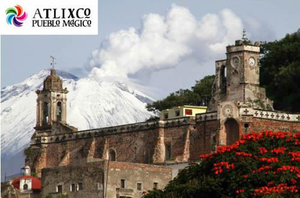
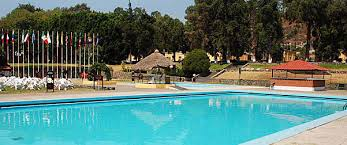
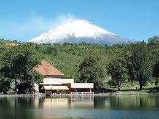
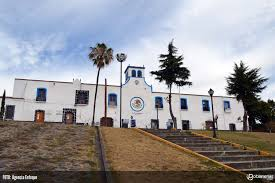
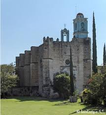
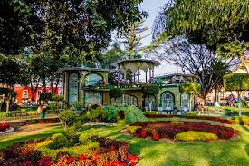
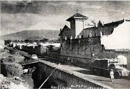
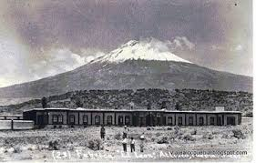
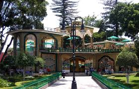

Se ubica a 25 km de la ciudad de Puebla, capital del Estado y cuenta con dos importantes vías de acceso: la Carretera Federal 190 y la moderna Autopista Vía Atlixcáyotl.
Actualmente, es una moderna ciudad con más de cien mil habitantes, que ha logrado armonizar su desarrollo urbano con el majestuoso legado de arquitectura colonial que dejaron sus fundadores (1579), y que hoy es uno de los principales atractivos turísticos de este municipio.
Es el evento más importante a nivel estatal donde se reúnen las 11 regiones etnogeográficas con que cuenta el estado de Puebla, mágica reunión que muestra a los visitantes nacionales y extranjeros de la calidad y calidez de los atlixquenses, mostrando la riqueza de nuestra cultura y tradiciones a través de la danza y música de nuestro Estado.
El sábado previo al Festival Atlixcáyotl empiezan a llegar los indígenas de los 7 grupos étnicos de Puebla tales como los popolocas, otomíes, nahuas etc., quienes realizan un desfile que culmina en el zócalo con la elección de la Xochicíhuatl (mujer flor) y sus Xochipilme (florecitas) evento en el que se demuestra la capacidad de la mujer indígena dentro de sus comunidades, pero éste no se trata de un certamen de belleza, más bien es la trascendencia que tienen las enseñanzas tradicionales y formativas en cuanto a costumbres y modos de empleo dentro de su comunidad.
Exposición y venta de flores y plantas que tambien cuenta con la presencia de de diferentes expositores de insumos y productos relacionados con la industria floral. Esta expo se realiza a principios del mes de Julio.Tambien destaca la Feria de la Noche Buena en en su tercera emisión se logró una producción de un millón 600 mil plantas.
La Expo Flores y Plantas cuenta con un espacio de 2 mil 500 metros cuadrados para más de 150 expositores de la localidad y del interior de la república.
Las Fiestas de Reyes es una actividad que nació en Atlixco para el país. Su meta cumplida es que ninguno de los 40 mil niños de escasos recursos que tenemos en el municipio se quede sin recibir un juguete.
Las Fiestas de Reyes de Atlixco fueron consideradas por el Fondo de las Naciones Unidas para la Infancia, la UNICEF, y el DIF Nacional como uno de los 17 mejores proyectos de la república mexicana que destacan la respuesta a una amplia convocatoria a voluntarios, pues en los trabajos participan más de mil ciudadanos, servidores públicos y empresarios incluso del extranjero.
Dentro de las Fiestas de Reyes, el Festival de la Ilusión tiene el objetivo de despertar en los niños la imaginación y hacer que ellos inviten a los Reyes Magos a visitar Atlixco.
Este festival lleno de magia, música, colorido y fuegos piroctécnicos se realiza en la Plazuela de la Danza del Cerro de San Miguel, donde llegado el momento los pequeñitos lanzan sus globos al cielo con las cartas que dirigen a los Reyes Magos.
El Festival de la ilusión logra reunir a más de 5 mil asistentes, entre papás y niños, con lo que se convierte en un gran festival.
Voluntarios y empresas preparan con anticipación la llegada de los Reyes quienes recorren las principales calles de la ciudad acompañados de payasos, personajes animados y carros alegóricos perfectamente iluminados que aluden a temas infantiles.
Desde hace ya tiempo, nuestra ciudad se ha dado a conocer por la exquisita cecina que se puede encontrar por los pasillos del mercado y en algunos restaurantes de la ciudad. Esta forma de preparar la carne de res posee el sabor de Atlixco, que por su delgadez es perfecta para servir en una tortilla acompañada de aguacate, queso, crema y una rica salsa.
La carne de borrego hecha en barbacoa es uno de los estilos de popularidad en el centro del país. Elaborada dentro de la tierra con hojas de maguey alcanza su mejor punto en sabor; lo puedes preparar en taco o simplemente con una rica salsa y aguacate. No olvides el consomé que se produce al cocinar la barbacoa.
Delicioso mole dulce representativo de Puebla, está hecho a base de varios chiles y condimentos, agregando una caricia de chocolate. Su consistencia espesa se acompaña comúnmente de una pieza de guajolote o pollo y se agrada a la vista decorándolo con ajonjolí tostado.
* Metepec: Donde se ubica el centro vacacional del IMSS.
*San Baltazar Atlimeyaya : Excelente opción para disfrutar de deliciosas truchas preparadas en sus restaurantes campestres.
*Tochimilco: Visite su ex convento franciscano estilo severiano.
*Huaquechula: Disfrute de los balnearios de la zona, la tradicional celebración de día de muertos y admire el arte gótico isabelino del ex convento franciscano.
*Zócalo:Una vuelta por el zócalo es una experiencia inolvidable, saboreando los ricos helados y sorbetes que venden cerca de allí, así mismo entrar a algún restaurante para degustar la cecina atlixquense, el guacamole, el consomé Atlixquense, o las truchas en sus diferentes modalidades. A tan solo una cuadra del centro, en el mercado encontrarás tortillas hechas a mano, expendios de cecina, tlacoyos, quesos frescos de la región o si eres de "gustoso paladar" podrás comer los originales chapulines fritos con sal y limón.
En el año 1100 el valle de Atlixco se hallaba ocupado por pobladores de origen Teochichimeca, Chichimeca y Xicalancas que bajo el dominio de la gran Tenochtitlan, se asentaron primeramente al poniente del cerro de San Miguel, hoy Solares Grandes
Estos primeros pueblos fundaron así Quaquechollan (Águila que huye) y que tiempo después llamaron Acapetlahuacan, "Lugar de división del señorío".
Su posición geográfica hizo que fuera escenario de luchas entre los diversos grupos indígenas que estaban asentados en los alrededores. Los pueblos de Calpan, Huejotzingo y Cholula se disputaron en diversas épocas la posesión del valle, que a la llegada de los españoles se encontraba bajo el dominio de Huejotzingo
Hacia 1420 se sostuvieron guerras entre los pobladores de Calpan y los Huejotzincas, quienes finalmente vencieron a los primeros obligándolos a emigrar al sur, donde actualmente es Huaquechula.